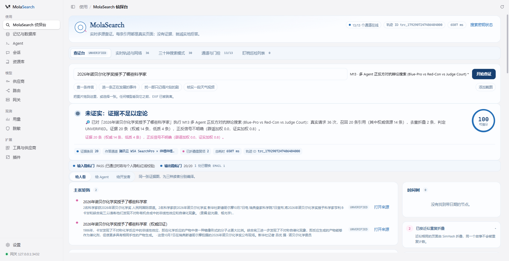
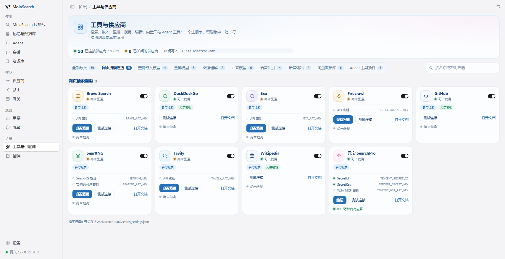
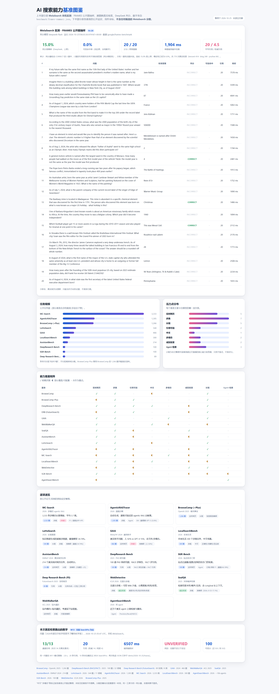

多源联网查证的检索工作台
13 条地位相同的搜索通道、30 种检索模式、六种记忆后端、39 个可测连通性的供应商。判定来自证据：查得到就给出引用，查不到就 ABSTAIN。
A real multi-source verification search workbench. 13 equal channels, 30 modes, six RAG stores, 39 providers with real connectivity checks. Built on a fork of magpie.
真实的能力
下面每一条都有代码或运行产物支撑。设计蓝图另存于 proposals/，不计入这里。
没有主通道
13 条通道并发执行，各自有超时与熔断器。腾讯云元宝 / WSA SearchPro 是其中一条一等通道，不是唯一入口；任一通道失败，其余继续服务本次查证。
证据决定结论
结果为 VERIFIED / REFUTED / UNVERIFIED / ABSTAIN。没有证据就是 ABSTAIN。每条引用带真实 URL、域名、通道与权威级，时间树只用抓到的真实日期。
换后端不丢数据
六种存储共用一个 Store 接口。热插拔分三阶段：备份 → 双写（源库继续服务读）→ 重算向量并做 SHA-256 语料比对，不一致就拒绝切换。
供应商一处管理
搜索、嵌入、重排、视觉、语音、向量库、模型与 Agent 工具共 39 个供应商。每次“测试连接”都是用已保存的密钥真实调用厂商接口，无密钥就报“未配置”。
三种入口，一套引擎
桌面窗口、浏览器页面、以及 molasearch.exe mcp search 的 stdio MCP 服务。MCP 的 clientInfo 会成为结果的 originAgent。
隐私先于网络
红线词表在任何网络请求之前执行；词表读不到或为空时拒绝检索（fail closed）。图片发给远程视觉模型前重新编码，EXIF/GPS 不出本机。
真实运行截图
2026-10-25 本机运行产物。截图里的引用均为公开网页；应用输出门在写入前已替换其中的个人信息。




快速开始（Windows）
需要 Go 1.26+、WebView2 运行时，以及一份已就位的 magpie fork 源码。
cd _ref\magpie
go build -tags production -trimpath -ldflags="-s -w -X main.version=mola-v5" -o ..\..\molasearch.exe .
powershell -ExecutionPolicy Bypass -File scripts\start-web.ps1网页地址 http://127.0.0.1:3430/?k=<key>，key 在 data\webkey.txt（首次启动自动生成，该目录已被 gitignore）。
| 端口 | 用途 |
|---|---|
127.0.0.1:3430 | 网页 / Detective 页面与 /api/* |
127.0.0.1:3432 | 本发行版的 LLM 网关（OpenAI / Anthropic / Gemini 兼容） |
默认端口刻意避开 magpie 常用的 3425，不与机器上已有的 magpie 抢端口。
诚实的边界
这一节和上面的能力清单同等重要。
- 基准不声明分数。目前只有一个小规模试点，判定器仍是词面启发式而非 NLI 模型，不足以支撑对外结论。
- 部分通道需要密钥。腾讯 WSA、Tavily、Exa、Brave、SearXNG 需要密钥；其余免 Key 通道照常工作。密钥只写在本地
.env，已在 gitignore 中。 - 远程后端不是全量真存储。Postgres 通过 pgx 真实读写；Elasticsearch / Milvus / Neo4j 做真实协议探测与部分写入，行数据仍由本地 SQLite 镜像承载。
- 只在 Windows 上真实构建与运行过。上游支持 macOS / Linux，但本发行版的验证都在 Windows + WebView2 上完成。
- Agent 配置默认隔离。启动脚本把 HOME 指向仓库内的
agent-home/，应用内 Agent 页面看不到也改不了本机真实配置。